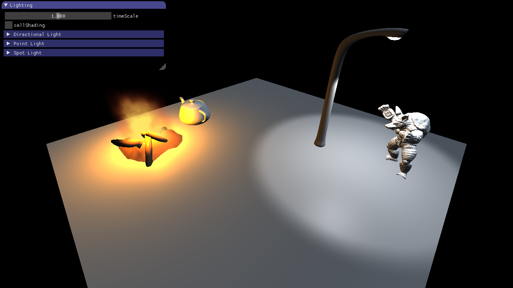
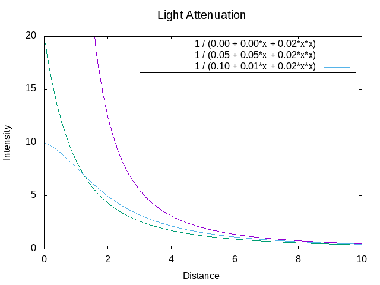
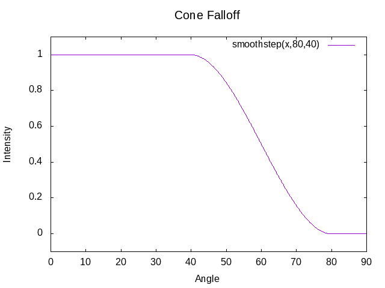
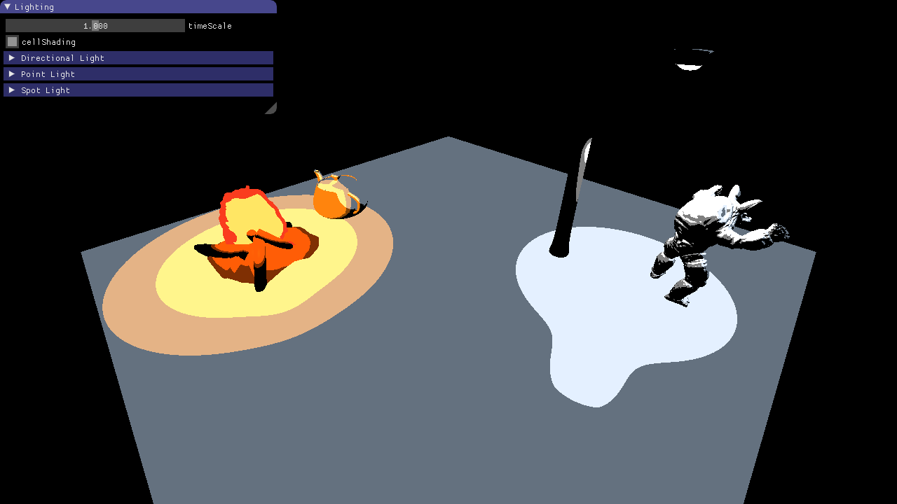

Phong Lighting approximates the illumination of a surface point $p$ seen from a position $eye$, assuming that the perceived color of the surface point is composed out of an ambient part, which tries to model the indirect light from the environment, a diffuse part and a specular part.
Below you see the $eye$, the position of the point light source ($light$) and the surface.
The surface is sampled at certain points. You can set a user specific sample using the left mouse button.
Your task is to implement the Phong Lighting, therefore you have to implement the function PhongLighting().
Note: The light emitted from the light source is assumed to be white so that you can
ignore the terms $I_{amb}$ and $I_{in}$ in the Phong formulae.
You can adjust the number of samples shown below:
So far, you are only able to compute a color for a single point. What is missing now is a technique to shade entire primitives (lines in 2D, triangles in 3D). As you know from the lecture, there are several shading methods. These methods describe ways to compute the color of illuminated surfaces. In this subtask we will have a look at Flat Shading, the next one will focus on Gouraud Shading.
Flat Shading is the most simple method:
It computes one color per primitive.
Complete the code in Basic1_2 to shade the line segments shown in the canvas below.
Again, you can adjust how often the Phong Lighting method is evaluated. For this subtask, this means changing the number of line segments. Furthermore, you can adjust how curved the surface should be.
In contrast to Flat Shading, Gouraud Shading computes the color at the vertices and interpolates the color linearly over the primitives.
Follow the TODOs in Basic1_2 and implement Gouraud Shading for the line segments.
In this task, you should implement Phong Lighting on a 3D terrain. As you know from the previous task, the Phong Lighting model consists of three terms: the ambient, diffuse and specular term. Right now, the terrain is only shaded with the constant ambient term, which results in an image difficult to interpret: Every pixel of the terrain has the same color and you can hardly see the two hills and the two valleys of the terrain. It is your task to add diffuse and specular term to make the scene look more realistic.
Unlike in the last task, you should not perform Flat or Gouraud Shading: To make the hills and valleys look good, you should implement Phong Shading. Therefore, you should not interpolate colors, but normals and positions. Using them in the fragment shader for lighting computations, you can determine colors on a per-fragment basis.
Follow the instructions in shader_phong.vs and shader_phong.fs to
produce the diffuse part of the illumination. Once you are done, you will be able to recognize the
hills and valleys by the illumination changes when the light source moves over the terrain.
Follow the instructions in shader_phong.fs to produce the specular part of the illumination.
Once you are done, you can experiment with this view-dependent part of the illumination. Use the keys A
and D to turn around the camera and see how the specular reflections move. This effect can be observed
better when the light source movement is turned off. You can control the shininess of the surface by using
the slider.
Use the sliders from Task 5.1 to test some very small numbers of line segments (between 1 and 5, for example). Which effect do you observe regarding the specular highlight in the middle?
Why does this problem not occur in the case of Phong Shading (see Task 5.2)?
From the lecture, you already know three different typical types of light sources:
In the first four subtasks you are asked to implement the lighting for all light types in the fragment shader (light_types.glsl).
For each of the three light sources a vec3 containing the incoming light is computed.
These three colors are then added together giving us the final color of each pixel.
The light attributes such as color and position are already passed to the shader in the struct Light. Use these uniforms in the following subtasks.
The final image should look like this:

Each light type in subtasks b) to d) computes the color with the Phong Shading model.
Implement the method vec3 phong(Light light, vec3 surfaceColor, vec3 n, vec3 l, vec3 v) in light_types.glsl.
This function takes the light, surface, and camera parameters as inputs and returns the shaded color. Hint: Basic exercise 5.2 ;).
Use the phong method from above to compute the color contribution of the directional light.
Once you are done, you should be able to see bonfire, teapot, lantern and armadillo lit by a directional light source.
Now you can test your implementation of subtask 5.4a) by altering the parameters for the directional light and observing the results.
Compute the color contribution of the point light.
Use the phong method again, but don't forget that the light direction is different for every surface point and the intensity falls of with distance.
We are using a quadratic light attenuation function:
\[I = \frac{I_{0}}{a + b r + c r^2} \]
The coefficients $a,b,c$ are the parameters of the quadratic polynomial and are stored in the uniform light.attenuation as a vec3(a,b,c).
$I_{0}$ is the initial intensity computed with phong and $I$ the remaining intensity at distance $r$.
As soon as you have implemented this task, play around with the attenuation parameters in the GUI and see how changes affect the lighting. In the next image, a few example attenuation functions are shown. If we set the constant and linear coefficients to zero the intensity goes to infinity close to the light (purple line).

Spot lights behave similar to point lights in terms of shading and attenuation.
Copy and paste the relevant code from the previous subtask, but make sure to use the spotLight uniforms instead.
In addition, light should only be emitted in a cone with angle spotLight.angle and direction spotLight.direction.
As a first step, compute the angle of the current fragment with respect to the cone and set the intensity to 0 if this angle is larger than the cone angle. If you implemented this correctly a hard edge will be visible between pixels inside and outside the cone.
Remove the hard edge by fading out the intensity towards the cone angle.
The angle at which fading should start can be computed by multiplying the cone angle with the sharpness parameter of the spot light.
For example, with coneAngle=80 and sharpness=0.8, the spotlight intensity should fade out between 64 and 80 degrees.
Use the built-in smoothStep function.
The plot below shows its course for the case coneAngle=80 and sharpness=0.5

In this task you are asked to implement simple cell shading. The basic principle is that the colors are quantized, creating the look that the image was drawn by hand with a finite amount of colors.
Implement the color quantization in light_types.glsl.
Each light color (for the three light types) should be quantized before they are added up.
The quantization should happen in HSV color space on the brightness value.
Use the functions rgb2hsv and hsv2rgb to convert between RGB and HSV.
The quantized HSV color for each light should take only three possible brightness values (0, 0.5 and 1),
which should cover equally sized value spans of the original brightness value.
